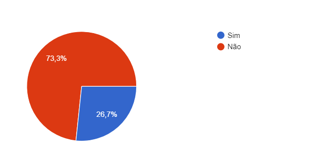

1. Introdução
Pelo questionário ser uma técnica simples, escolhemos utilizá-la para ajudar o projeto em relação à elicitação de requisitos, por ser uma técnica que conta com participação pública em relação ao aplicativo VivaBem, nos ajudou a entender mais a opnião dos usuários e suas dúvidas sobre o aplicativo, com perguntas simples e rápidas de responder.
Com a partipação do publico conseguimos perceber como o aplicativo é utilizado, conseguindo elicitar os requisitos a partir das respostas dadas no questionário.
2. Perguntas escolhidas
Com as perguntas que fizemos, descobrimos se a pessoa que está respondendo o questionário conhece e faz uso do aplicativo. Por meio do google forms fizemos as seguintes questões:
- O usuário conhece o aplicativo?
- Alguns dados do usuário.
- Quais as melhores funcionalidades do aplicativo?
- As respostas nos ajudam a identificar o público alvo?
- O questionário nos ajuda a perceber o comportamento do usúario em relacão ao aplicativo?
3. Resultados do questionário
As perguntas realizadas no questionário e suas respostas estão listadas abaixo:
3.1 Qual sua idade?

A partir dessa primeira questão do questionário, queriamos descobrir a faixa etário do público que utiliza o aplicativo ou que possui algum interesse nele. Com essa pergunta concluimos que o público que estamos usando como análise é mais jovem.
3.2 Você conhece/utiliza o aplicativo VivaBem?

Com essa pergunta percebemos que metade do público questionado não conhece o aplicativo VivaBem e apenas uma parcela conhece e utiliza o app.
3.3 Qual a frequência de uso do aplicativo?

Como a maioria do público não conhece o aplicativo a frequência de uso da maioria não se aplica, pórem para quem conhece e usa o app a frequência é de mais de uma vez por semana.
3.4 Você usa medicamentos?

Com essa pergunta queriamos ver quantas pessoas que responderam o questionário usam medicamentos, visto que o aplicativo é direcionado a esse público, com esses dados vimos que a maioria não usa de remédios.
3.5 Quais as funcionalidades do VivaBem você mais usa?
Essas respostas serviram para saber quas funcionalidades do app são as mais utilizadas pelo público que marcou que utiliza ele, a maioria foi ver as nóticias do mundo da sáude e cadastrar os medicamentos.
3.6 Alguma funcionalidade não opera corretamente?

Essa pergunta foi para ver quais funcionalidades que o público percebeu que não operam corretamente, como a maioria utiliza a função de visualizar as notícias do mundo da saúde, ela foi também a que aparenta ter mais erros de funcionalidade.
3.7 Você acredita que o aplicativo seja útil para o seu dia a dia?

Como a maioria não conhece ou não utiliza o app e não usam medicamentos, a grande parte dos votos foram para que não seja útil o app, pórem para quem usa, acredita-se ser muito útil.
4. Requisitos elicitados
| Número | Requisito | Tipo |
|---|---|---|
| 1 | Descrever funcionalidades principais na tela inicial | Funcional |
| 2 | Oferecer tutorial no primeiro uso do aplicativo | Funcional |
| 3 | Receber notificações do aplicativo | Funcional |
| 4 | Poder visualizar novidades | Funcional |
| 5 | Cadastrar medicamentos e exames | Funcional |
| 6 | Apresentar as funcionalidades de uma forma mais visual | Não funcional |
| 7 | Demonstrar como as funcionalidades acontecem | Não funcional |
| 8 | Aumentar a acessibilidade para usuários com dificuldades | Não funcional |
Referências e Bibliografias
https://www.maxwell.vrac.puc-rio.br/15760/15760_3.PDF
Versionamento
| Versão | Data | Modificação | Autor |
|---|---|---|---|
| 1.0 | 18/09/2021 | Criação do documento, listagem das respostas e elicitação dos requisitos | Gabriel Avelino |
| 1.1 | 19/03/2021 | listagem das respostas e tabela elicitação dos requisitos | Gabriel Avelino |